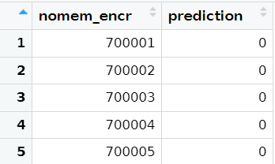
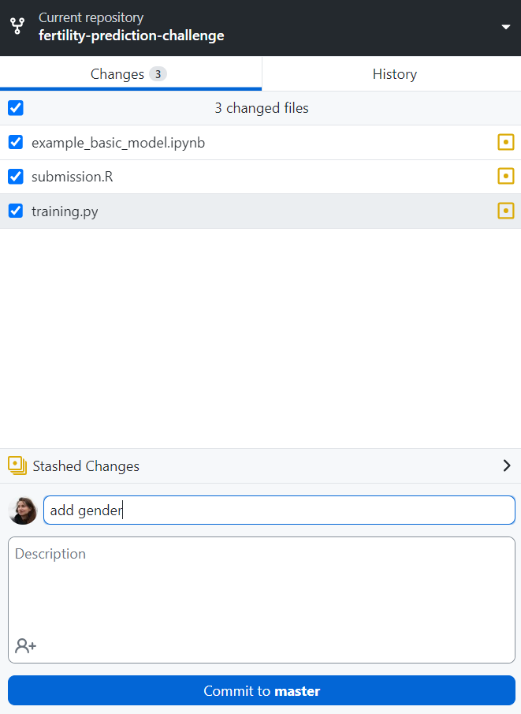

A walkthough of submitting a simple model in python
Here we show the steps for submitting a simple model in python
Here we describe how to prepare and make a submission in Python. The sole purpose of this script is to make the submission process more clear, not to present a model that is any good.
In this example, we assume that you did all the prerequisite steps described here. You have forked and cloned (e.g. downloaded) the GitHub repository, and now have a folder with all the files from this repository on your computer. We will call this folder your “local repository”.
Let’s imagine that you want to add one predictor to the basic model that is already in the repository: respondents’ gender (variable name gender_bg, as you found using the codebooks). To produce this model you should use the template functions that are already in the repository: clean_df for preprocessing the data from the “submission.py” script, train_save_model from the “training.py” script, and predict_outcomes from the “submission.py” script (to test your model and preprocessing).
Overall steps: reading in the data —> preprocessing the data —> training and saving the model —> testing on the fake data —> editing/saving “submission.py”, “training.py”, “packages.py” accordingly —> adding a short description of the method to “description.md” —> pushing your materials to the online Github repository -> submitting.
Reading-in data
- Read-in the training data and outcome. IMPORTANT: it is strongly advised to save the PreFer datafiles in a different folder than your local repository. The reason is that these datasets cannot be made public, and when you save the datasets in your local repository you may accidentally upload the datasets to your online repository when you “push” your latest changes. This would constitute a serious data breach.
The code to read-in your data is the only code that you do not need to document through your repository.
```{python}
import pandas as pd
from sklearn.linear_model import LogisticRegression
import joblib
# loading data (predictors)
train = pd.read_csv("path to the data which is NOT in your local repository\\PreFer_train_data.csv", low_memory = False)
# loading the outcome
outcome = pd.read_csv("path to the data which is NOT in your local repository\\PreFer_train_outcome.csv")
```Preprocessing and training
- Find your folder with the PreFer materials, and open the
submission.pyscript. Edit theclean_dffunction: add the new variable:
```{python}
def clean_df(df, background_df=None):
"""
Preprocess the input dataframe to feed the model.
# If no cleaning is done (e.g. if all the cleaning is done in a pipeline) leave only the "return df" command
Parameters:
df (pd.DataFrame): The input dataframe containing the raw data (e.g., from PreFer_train_data.csv or PreFer_fake_data.csv).
background (pd.DataFrame): Optional input dataframe containing background data (e.g., from PreFer_train_background_data.csv or PreFer_fake_background_data.csv).
Returns:
pd.DataFrame: The cleaned dataframe with only the necessary columns and processed variables.
"""
## This script contains a bare minimum working example
# Create new variable with age
df["age"] = 2024 - df["birthyear_bg"]
# Imputing missing values in age with the mean
df["age"] = df["age"].fillna(df["age"].mean())
# Selecting variables for modelling
keepcols = [
"nomem_encr", # ID variable required for predictions,
"age" # newly created variable
,"gender_bg" # <--------ADDED VARIABLE
]
# Keeping data with variables selected
df = df[keepcols]
return df
```Now your clean_df function is done.
- Edit the
train_save_modelfunction from the “training.py”: add the new variable:
```{python}
def train_save_model(cleaned_df, outcome_df):
"""
Trains a model using the cleaned dataframe and saves the model to a file.
Parameters:
cleaned_df (pd.DataFrame): The cleaned data from clean_df function to be used for training the model.
outcome_df (pd.DataFrame): The data with the outcome variable (e.g., from PreFer_train_outcome.csv or PreFer_fake_outcome.csv).
"""
## This script contains a bare minimum working example
#random.seed(1) # not useful here because logistic regression deterministic
# Combine cleaned_df and outcome_df
model_df = pd.merge(cleaned_df, outcome_df, on="nomem_encr")
# Filter cases for whom the outcome is not available
model_df = model_df[~model_df['new_child'].isna()]
# Logistic regression model
model = LogisticRegression()
# Fit the model
model.fit(model_df[['age', 'gender_bg']], model_df['new_child']) # <------- ADDED VARIABLE
# Save the model
joblib.dump(model, "model.joblib")
```Now your train_save_model function is done.
Preprocess the data using your updated
clean_dffunction, and then train the model viatrain_save_model. If you are working in a R Markdown or R Notebook document in RStudio, or when you have opened an Rproject (recommended!), the model (model.rds) will be saved in the same folder as your scripts – in your local repository. If you are working via an R script, you will probably need to manually set the local repository as the working directory.Preprocess the data using your updated
clean_dffunction, and then train the model viatrain_save_model. If you are using Jupyter Notebook, the model (model.joblib) is now saved in the same folder as the script - in your local repository. If you are using an environment where the folder where the script is located is not set as the working directory by default, you should manually set the local repository as the working directory.
```{python}
# import os
# print os.getcwd() <--- this prints the current working directory
# os.chdir(path to your local repository) #<---- provide the path here
# preprocessing the data
train_cleaned = clean_df(train)
# training and saving the model
train_save_model(train_cleaned, outcome)
```Your model is trained, and saved in model.joblib.
Testing on fake data
- Test the preprocessing function and model on fake data to see if they will run on the holdout set. If your method does not run on the “fake data”, it will not run on the holdout data. [If you “push” your method to Github this test will also be automatically run].
To do this test you can edit the function predict_outcomes from t”submission.py”. Load the fake data (it is already in your local repository) and apply the predict_outcomes.
```{python}
# load the data
fake = pd.read_csv("PreFer_fake_data.csv")
def predict_outcomes(df, background_df=None, model_path="model.joblib"):
"""Generate predictions using the saved model and the input dataframe.
The predict_outcomes function accepts a Pandas DataFrame as an argument
and returns a new DataFrame with two columns: nomem_encr and
prediction. The nomem_encr column in the new DataFrame replicates the
corresponding column from the input DataFrame. The prediction
column contains predictions for each corresponding nomem_encr. Each
prediction is represented as a binary value: '0' indicates that the
individual did not have a child during 2021-2023, while '1' implies that
they did.
Parameters:
df (pd.DataFrame): The input dataframe for which predictions are to be made.
background_df (pd.DataFrame): The background dataframe for which predictions are to be made.
model_path (str): The path to the saved model file (which is the output of training.py).
Returns:
pd.DataFrame: A dataframe containing the identifiers and their corresponding predictions.
"""
## This script contains a bare minimum working example
if "nomem_encr" not in df.columns:
print("The identifier variable 'nomem_encr' should be in the dataset")
# Load the model
model = joblib.load(model_path)
# Preprocess the fake / holdout data
df = clean_df(df, background_df)
# Exclude the variable nomem_encr if this variable is NOT in your model
vars_without_id = df.columns[df.columns != 'nomem_encr']
# Generate predictions from model, should be 0 (no child) or 1 (had child)
predictions = model.predict(df[vars_without_id])
# Output file should be DataFrame with two columns, nomem_encr and predictions
df_predict = pd.DataFrame(
{"nomem_encr": df["nomem_encr"], "prediction": predictions}
)
# Return only dataset with predictions and identifier
return df_predict
# apply the function to the fake data
predict_outcomes(fake)
```If you get a data.frame including predictions, your test on the fake data has passed!

Edit/save files for submission
You can now prepare the files for submission, that will be applied to the holdout set:
Edit/Save the
clean_dffunction in your “submission.py”. This code will be applied to the holdout data. You don’t need to adapt thepredict_outcomesfunction in “submission.py” because the outputs of your model are predicted classes already (i.e., 0s and 1s).prediction model: make sure that your model is saved in the same folder as submission.py under the name
model.joblib.“environment.yml”: you don’t have to edit this file now, because you didn’t used any packages.
Edit/Save the
train_save_modelfunction in the “training.py” script.When you think your all set, it is advised to test the entire workflow by running
python run.py PreFer_fake_data.csv PreFer_fake_background_data.csvfrom the command line / terminal.
Adding a description
- Add a brief description of your method to the file
description.md(e.g. “binary logistic regression with two variables - age and gender - selected manually”)
Update online GitHub repository
Now you need to update your online GitHub repository. You can do it in several ways. Here we assume that you used GitHub Desktop for cloning the repository and will also use it to commit (i.e. capture the state of the local repository at that point in time) and push the changes (e.g. change the online repository):
Go to GitHub Desktop and press “Commit to master”. You need to add some description (e.g. “add gender”).
Push the changes (“Push origin”) (i.e. update your online repository) - press “Push origin” on the upper right.
Now go to the “Actions” tab in you online github repository. After a few minutes you’ll see if your submission passed the automatic checks.
Submit your method
- Submit your method as explained here.
IMPORTANT: always save the code that you used to produce the model via the train_save_model function. Eventhough this function will not be run on the holdout data, we [the PreFer organisers] will use it to ensure reproducibility and verify whether the predictions you submitted are the same as the predictions that arise from your code stored in train_save_model.
Photo by Fotis Fotopoulos on Unsplash | Photo by Kelli McClintock on Unsplash